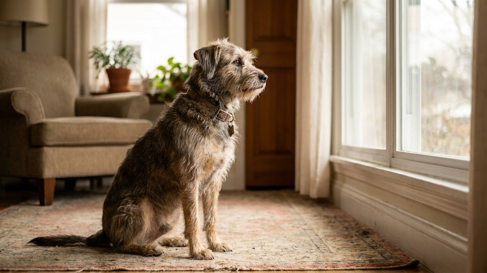

По данным Американской ветеринарной ассоциации, тревога разлуки присутствует у 20-40% собак, обращающихся к специалистам по поведению. При этом большинство хозяев не знают, что именно усугубляет ситуацию — и часто делают ровно то, что делает собаке хуже. Разбираем симптомы, ошибки и рабочий план коррекции.
Тревога разлуки (separation anxiety) — это клиническое состояние, при котором собака испытывает острый дистресс в отсутствие значимого человека или группы людей. Это не «плохое воспитание» и не «месть» хозяину. Это паника — физиологическая, с выбросом кортизола и адреналина, с учащённым сердцебиением и попытками любой ценой вернуть источник безопасности.
Разница между обычным деструктивным поведением и тревогой разлуки принципиальна для коррекции:
Симптомы делятся на то, что вы видите до ухода, что происходит в отсутствие, и что видите по возвращении.
До вашего ухода (признаки предвосхищения):
В ваше отсутствие (можно увидеть на видеозаписи):
По вашему возвращении:
Самый надёжный способ диагностировать тревогу разлуки — оставить телефон с записью видео или использовать видеокамеру. Посмотрите, что происходит в первый час после вашего ухода.
Это самая важная часть статьи. Интуитивные реакции хозяев на тревогу разлуки в большинстве случаев усугубляют проблему.
Наказывать по возвращении. Вы видите разгром и кричите. Собака не связывает наказание с действиями часовой давности — она связывает его с вашим возвращением. Результат: тревога при вашем возвращении добавляется к тревоге при уходе.
Долгие прощания. «Мама сейчас уйдёт, ты будь умницей, я скоро вернусь» — пока вы это говорите, вы активируете у собаки тревогу прощания. Чем длиннее ритуал прощания, тем сильнее собака накручивает себя до вашего ухода. Уходите нейтрально, без слов и долгих объятий.
Бурное приветствие по возвращении. Если вы радостно кричите «я вернулся!» и обнимаете собаку — вы подтверждаете, что ваше возвращение — событие огромной важности. Это укрепляет убеждение, что ваше отсутствие — катастрофа. Возвращайтесь нейтрально, подождите 5-10 минут, потом поздоровайтесь спокойно.
Брать с собой везде «чтобы не страдала». Краткосрочно это работает. Долгосрочно — убирает возможность научиться переносить разлуку. Собака, которую никогда не оставляют одну, не имеет опыта, что это безопасно.
Получить второго питомца «для компании». Если тревога разлуки привязана к конкретному человеку — другая собака не помогает. Собака будет в панике даже в присутствии сородича, пока не придёт хозяин. Это работает только если тревога привязана к «одиночеству» как таковому — что бывает редко.
Ждать, что «само пройдёт». Не пройдёт. Тревога разлуки без коррекции нарастает или остаётся стабильной. Само улучшается только если изменились обстоятельства — например, хозяин перешёл на удалённую работу. Но при возобновлении разлуки всё возвращается.
Десенситизация — это постепенное снижение чувствительности к триггеру через многократное безопасное воздействие. Ключевое слово: постепенное. Если пропустить этапы — не работает.
Шаг 1. Разорвать связь «ключи = уход». Берите ключи и кладите в кармане, не уходя. Надевайте куртку — и садитесь смотреть телевизор. Пакуйте сумку — и никуда не идите. Делайте это 10-15 раз в день несколько дней. Когда собака перестанет реагировать — переходите к следующему шагу.
Шаг 2. Выходить на секунды. Выйдите за дверь на 3-5 секунд и вернитесь нейтрально. Повторяйте много раз. Постепенно увеличивайте время: 10 секунд, 30 секунд, 1 минута. Критерий для перехода: собака спокойна при вашем возвращении (не возбуждена чрезмерно).
Шаг 3. Наращивать время постепенно. 2 минуты, 5 минут, 10 минут. Не прыгайте с 5 минут на час. Если на каком-то шаге собака снова возбуждается — откатитесь на шаг назад и закрепите.
Шаг 4. Вариативность. Когда собака спокойно переносит 30-40 минут одиночества — начните варьировать время случайным образом. Уйти на 15 минут, потом на 45, потом на 20. Это учит собаку, что невозможно предсказать длительность — и что в любом случае хозяин возвращается.
Важно: весь процесс может занять от нескольких недель до нескольких месяцев. Скорость зависит от тяжести тревоги и последовательности хозяина.
При тяжёлой тревоге разлуки поведенческая коррекция без медикаментов малоэффективна — у собаки буквально нет ресурса учиться в состоянии паники. Ветеринар или ветеринарный поведенческий специалист может назначить:
Медикаменты не лечат тревогу разлуки — они снижают тревогу достаточно, чтобы собака могла учиться. Поведенческая работа должна вестись параллельно.
Щенки до 6 месяцев. Плач и скуление щенка, когда он один, — нормальная реакция на разлуку с матерью и пометом. Это не обязательно тревога разлуки в клиническом смысле. Задача хозяина: не закрепить панику, а научить, что одиночество — безопасно. Правила те же: не реагировать на нытьё, поощрять спокойное поведение, наращивать время постепенно. Большинство щенков адаптируются за 4-6 недель при последовательном подходе.
Взрослые собаки из приюта или с улицы. Адаптационный период у взрослой собаки — 3-6 месяцев. В первые недели нормально, что собака ведёт себя тревожно. Дайте время. Если через 2-3 месяца после адаптации симптомы нарастают или не уходят — это уже не адаптация, это тревога разлуки, требующая коррекции.
Собаки, у которых началась тревога «внезапно». Если собака всегда нормально оставалась одна, а теперь нет — сначала к ветеринару. Боль (артрит, зубная боль, внутренние проблемы), ухудшение зрения или слуха, начинающаяся когнитивная дисфункция у пожилых собак — всё это может проявляться как тревога разлуки. Исключите физическую причину прежде, чем работать поведенчески.
Коррекция тревоги разлуки — небыстрый процесс. Хозяева часто теряют мотивацию, не видя немедленного результата. Вот признаки, что всё идёт в правильном направлении:
Если через 6-8 недель последовательной работы нет никаких изменений — нужна консультация специалиста по поведению. Это не значит, что вы делаете что-то не так: тяжёлые случаи требуют индивидуального плана.
«Собака портит только мои вещи, а не чужие. Это месть?» Нет. Собаки не понимают концепцию мести. Ваши вещи пахнут вами сильнее всего — это и есть единственная причина, почему собака выбирает именно их в состоянии тревоги. Запах снижает стресс, поэтому собака инстинктивно тянется к нему.
«Мне кажется, она специально делает это на виду, чтобы я видел». Нет. Деструктивное поведение при тревоге разлуки происходит именно в ваше отсутствие. Если при вас — это другое: скука, недостаток нагрузки, или проверка реакции.
«Наказание не помогает. Почему?» Потому что наказание после факта работает только в окне 1-2 секунд. Через минуту собака уже не связывает наказание с поступком. Через час — тем более. Наказание учит бояться хозяина, а не менять поведение.
«Мне говорят взять второго питомца. Поможет?» Только если тревога привязана к «одиночеству» в целом, а не к конкретному человеку. Большинство случаев SA — привязанность к конкретному хозяину. Второй питомец тогда не поможет, а добавит расходы и сложности.
«Это навсегда?» Нет. При правильной коррекции большинство собак достигают значительного улучшения. Полного «излечения» может не быть — некоторые собаки всю жизнь более чувствительны к разлуке. Но комфортный уровень тревоги, при котором и собака, и хозяин живут нормально — достижим.